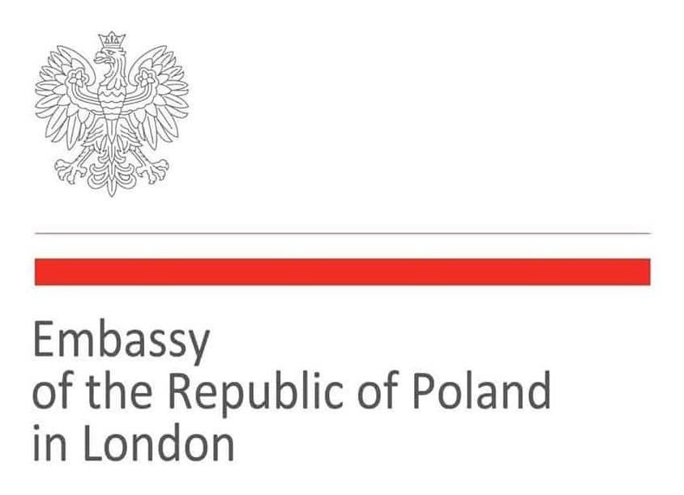
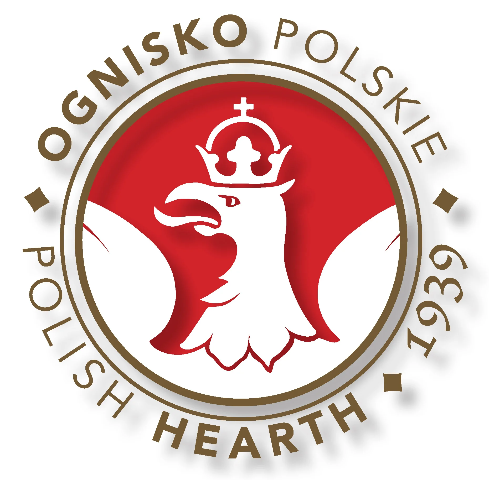
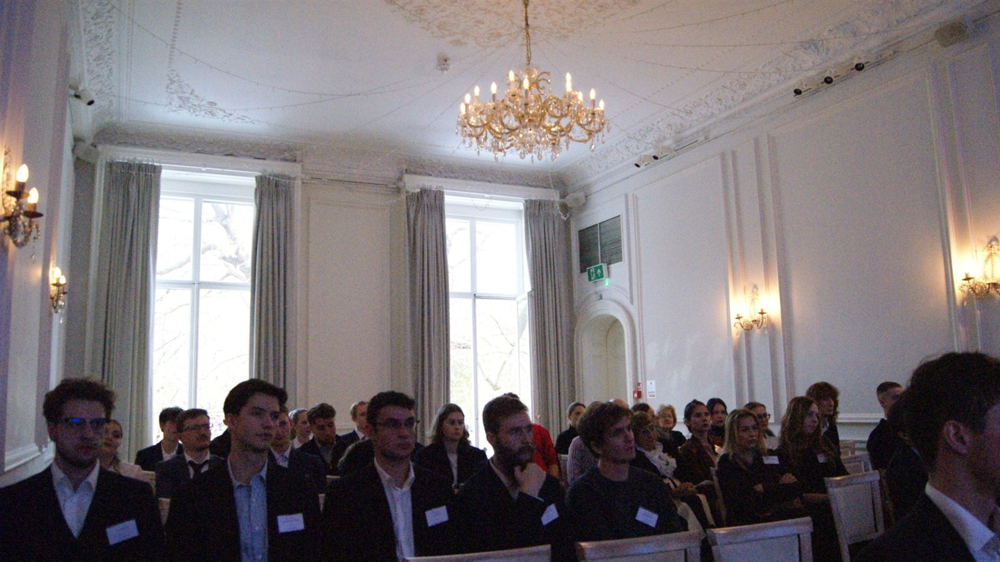
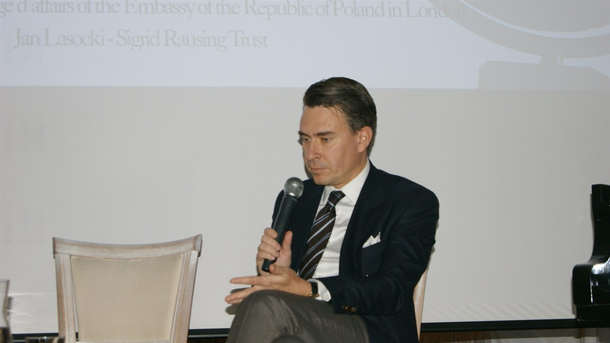
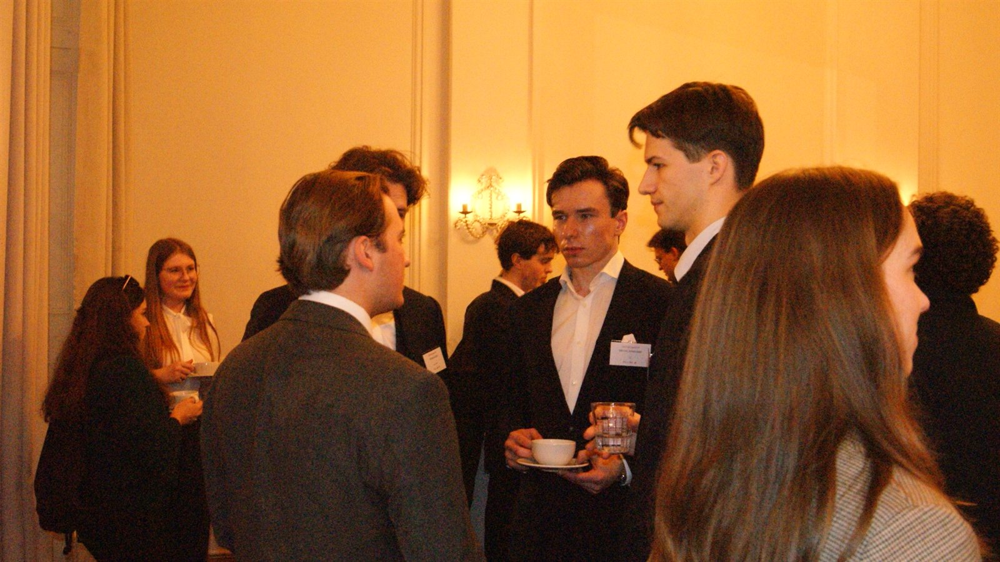

Dzień dialogu młodych Polaków w Wielkiej Brytanii — w duchu Narodowego Święta Niepodległości.






Polish Youth Congress 2025 był jednodniową konferencją zorganizowaną przez Federację Polskich Stowarzyszeń Studenckich w Wielkiej Brytanii we współpracy z Ambasadą Rzeczypospolitej Polskiej w Londynie. Wydarzenie odbyło się 9 listopada 2025 roku w Ognisku Polskim (The Polish Hearth Club) w Londynie i zgromadziło studentów, młodych profesjonalistów, liderów społeczności, dyplomatów, przedsiębiorców oraz ekspertów z wielu dziedzin.
Kongres powstał, by stworzyć przestrzeń do rozmowy o szansach i wyzwaniach stojących przed młodymi Polakami w Wielkiej Brytanii i poza nią. Przez cały dzień uczestnicy poruszali tematy od finansów międzynarodowych, przez przedsiębiorczość, przywództwo, społeczeństwo obywatelskie i geopolitykę, po sprawy publiczne i rozwój osobisty. W programie znalazły się wykłady, panele dyskusyjne, rozmowy w swobodnej formule oraz interaktywne warsztaty z komunikacji i wystąpień publicznych.
Wśród prelegentów znaleźli się przedstawiciele Ambasady RP w Londynie, doświadczeni profesjonaliści z globalnych instytucji finansowych, przedsiębiorcy, eksperci od polityk publicznych, liderzy organizacji charytatywnych oraz przedstawiciele młodego pokolenia, którzy aktywnie kształtują przyszłość Polonii w Europie. Wydarzenie sprzyjało wymianie myśli, dzieleniu się doświadczeniem i budowaniu wartościowych relacji zawodowych i osobistych.
Szczególnie dziękujemy Annie Tarnowskiej, wicekonsul w Wydziale Konsularnym i Polonii Ambasady Rzeczypospolitej Polskiej w Londynie, za ogrom pracy, jaki włożyła w organizację Kongresu razem z nami.
Dla uczczenia Narodowego Święta Niepodległości program zakończyła Sonata b-moll nr 2 Fryderyka Chopina w wykonaniu Roksana Dąbkowska.
Kongres odbył się również w duchu Narodowego Święta Niepodległości. Kończący go koncert fortepianowy był trafnym akcentem kulturalnym, łączącym rozmowy o przyszłości Polski ze świętowaniem jej bogatego dziedzictwa.
Polish Youth Congress 2025 pokazał siłę, ambicję i zaangażowanie młodych Polaków za granicą, umacniając misję Federacji: łączyć i wzmacniać polskich studentów oraz młodych profesjonalistów w całej Wielkiej Brytanii.
Przeglądaj i pobierz pełny album z Polish Youth Congress 2025.